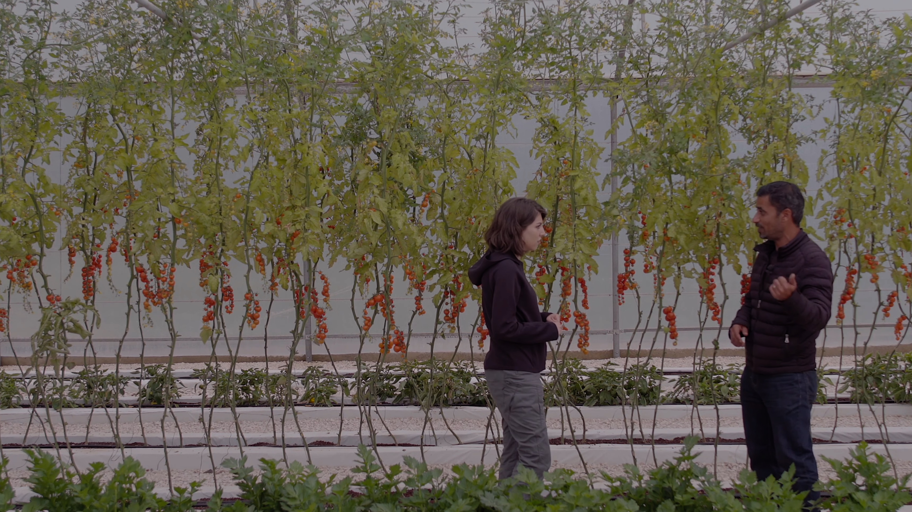
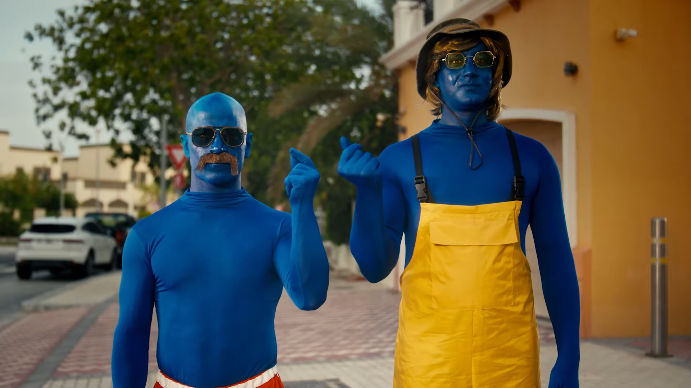
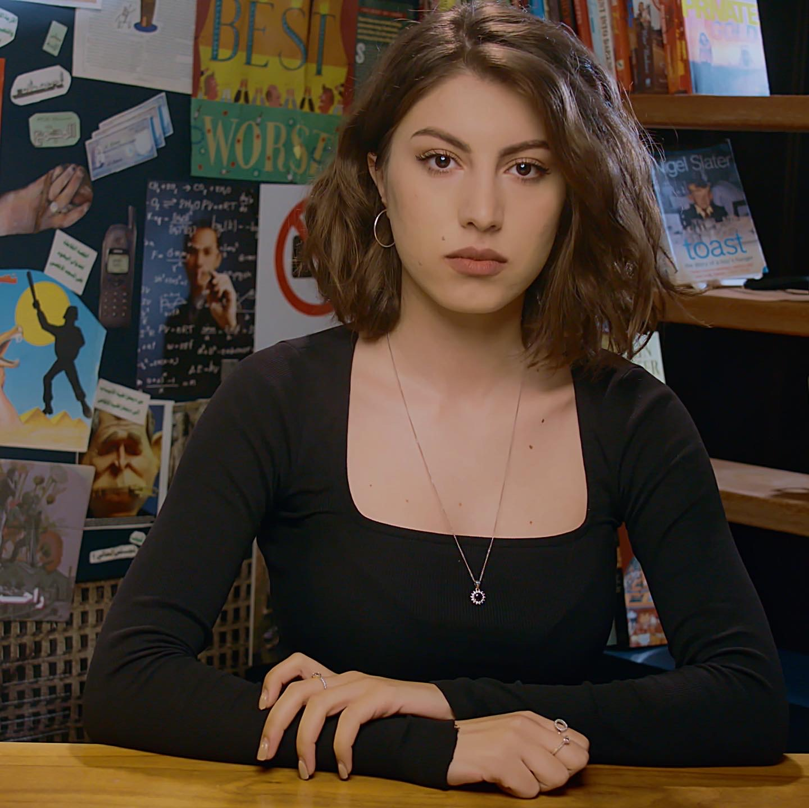
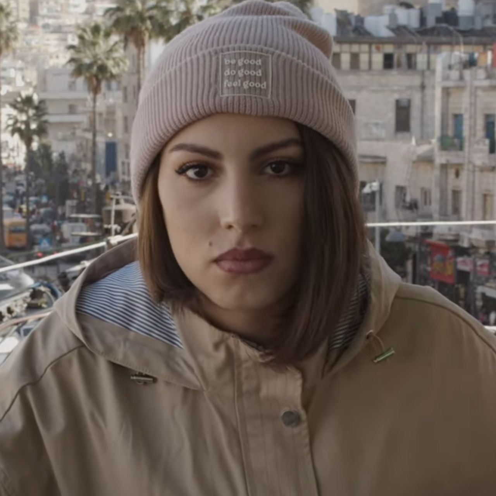
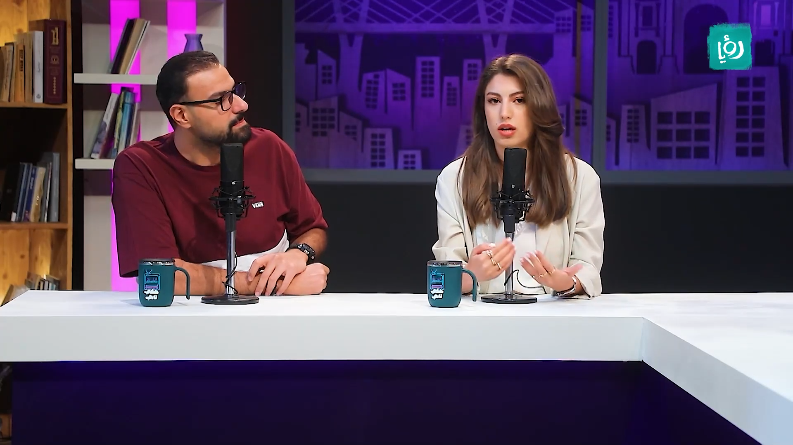

I produced, presented, and managed the social media presence of an eight-episode series that explores the current water problems in Jordan and discovers the expected scenarios for the future. With the support of the Qareeb Program, a regional program implemented by the French Agency for Media Development (CFI) and funded by the French Agency for Development (AFD).

I worked as a production manager at Artology Production House for a social media film project in collaboration with ‘Naadi44'.
I produced, presented, and managed the social media presence of "Umumi 101"; a multidimensional project that combines on-site and digital approaches to motivate and enhance civic engagement among Jordanian youth.

I presented and managed the social media presence of 209 King Hussein Street; a program that closely monitors the legislative activities of the Jordanian Parliament, including the drafting and promulgation of laws, as well as its oversight role. This program provides insightful analyses based on statistical data.

I produced, edited and managed the social media presence of Ya Farahty; a program that raises questions and reviews the problems we face at work, in particular. Starting with education in schools and universities, passing through the job we choose, the work environment, the relationships that bind us with colleagues and managers, how we develop and our satisfaction with the work we do, and the reflection of these problems on our personal lives that we see through our thoughts and actions, our mental health, and our relationships with family and friends.

I produced, presented, edited and managed the social media presence of Sama ou Ard; a program that explores environmental issues in Jordan and their impact on society.

I co-hosted Haki Tani; a program that engages with a variety of social issues through personal perspectives and nuanced portrayals by its hosts. It presents these topics in a youthful and conversational format, featuring Rawan Alsharayri, Maan Saffi, Anas Al-Hourani, and Alaa Abidat as hosts.